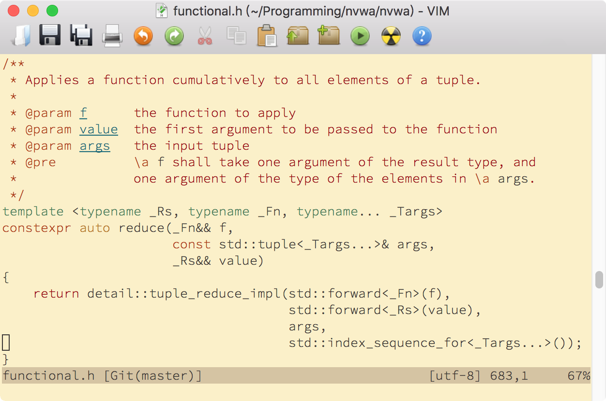

- 00 导读 池建强：Vim 就是四个字“唯快不破”.md.html
- 00 开篇词 我们为什么要学 Vim？.md.html
- 01 各平台下的 Vim 安装方法：上路前准备好你的宝马.md.html
- 02 基本概念和基础命令：应对简单的编辑任务.md.html
- 03 更多常用命令：应对稍复杂的编辑任务.md.html
- 04 初步定制：让你的 Vim 更顺手.md.html
- 05 多文件打开与缓冲区：复制粘贴的正确姿势.md.html
- 06 窗口和标签页：修改、对比多个文件的正确姿势.md.html
- 07 正则表达式：实现文件内容的搜索和替换.md.html
- 08 基本编程支持：规避、解决编程时的常见问题.md.html
- 09 七大常用技巧：让编辑效率再上一个台阶.md.html
- 10 代码重构实验：在实战中提高编辑熟练度.md.html
- 11 文本的细节：关于字符、编码、行你所需要知道的一切.md.html
- 12 语法加亮和配色方案：颜即正义.md.html
- 13 YouCompleteMe：Vim 里的自动完成.md.html
- 14 Vim 脚本简介：开始你的深度定制.md.html
- 15 插件荟萃：不可或缺的插件.md.html
- 16 终端和 GDB 支持：不离开 Vim 完成开发任务.md.html
- 拓展1 纯文本编辑：使用 Vim 书写中英文文档.md.html
- 拓展2 C 程序员的 Vim 工作环境：C 代码的搜索、提示和自动完成.md.html
- 拓展3 Python 程序员的 Vim 工作环境：完整的 Python 开发环境.md.html
- 拓展4 插件样例分析：自己动手改进插件.md.html
- 拓展5 其他插件和技巧：吴咏炜的箱底私藏.md.html
- 结束语 Vim 森林探秘，一切才刚刚开始.md.html
- 捐赠
12 语法加亮和配色方案：颜即正义
你好，我是吴咏炜。
语法加亮这个功能，我们都非常熟悉。和 vi 刚出现的时代不同，它现在已经成为编程的基本功能了。在我们使用的各种代码编辑器中，都有语法加亮的功能。我们甚至可以拿一句俗语反过来说：没见过猪跑，还能没吃过猪肉么？
但是，你有没有想过，语法加亮到底是怎么实现的呢？今天，我们就不仅要尝尝不同“风味”的猪肉，还要进一步看看猪到底是怎么跑的——这样，我们才能选择，然后调整出，最符合自己口味的大菜。
语法加亮
在[第 8 讲]里，我们已经提到，Vim 的语法加亮依靠的是在 syntax 目录下的运行支持文件。今天，我就通过例子给你解说一下，Vim 里如何实现语法加亮，然后语法加亮又如何映射到屏幕上的颜色和字体。
我们先来看一个比较简单的例子，xxd。
xxd 这个名字看起来，是不是有点陌生又有点熟悉？其实，我们在第 11 讲还刚讲过 xxd：它是一个把二进制文件转换成地址加十六进制数值再加可读 ASCII 文本的工具，它的输出格式在 Vim 里也被称作 xxd。不过，在用菜单项或 :%!xxd 命令转换之后，Vim 并不会自动使用 xxd 格式。要应用 xxd 格式的语法加亮，我们需要使用自动命令（可以参考 :help using-xxd），或者手工使用命令 :setf xxd。下图是对上次的二进制文件使用了 xxd 语法加亮的效果：
这个格式的语法加亮足够简单，我们就拿它来分析一下。不过，我有个小建议，你在看具体的语法加亮代码前，先花几秒钟的时间看一下图，自己分析一下里面有几种不同的语法加亮效果。
下面我们就来逐步看一下 syntax/xxd.vim 的内容。首先是开头和结尾部分：
" quit when a syntax file was already loaded
if exists("b:current_syntax")
finish
endif
…
let b:current_syntax = "xxd"
" vim: ts=4
最后一行的模式行，设定了这个文件使用的 tab 宽度。剩余部分基本上算是语法文件的固定格式了，有一个检查缓冲区变量（使用前缀 b:）、防止语法文件重复载入的条件判断，并在结尾设定这个缓冲区变量为语法的名称。
剩余部分可以分为两段。第一段是语法匹配：
syn match xxdAddress "^[0-9a-f]\+:" contains=xxdSep
syn match xxdSep contained ":"
syn match xxdAscii " .\{,16\}\r\=$"hs=s+2 contains=xxdDot
syn match xxdDot contained "[.\r]"
这儿定义了 4 种不同的“语法项目”，其中 1、2 和 3、4 还互相有包含（“contains”）和被包含（“contained”）的关系。
- xxdAddress。它是地址匹配，所以匹配条件是从行首开始的一个或更多的十六进制字符后面跟一个冒号。
- xxdSep。它是分隔符，仅匹配 xxdAddress 中的冒号部分，也算是地址的一部分。
- xxdAscii。它是右边的 ASCII 字符部分，条件是两个空格后面跟最多 16 个字符，然后是可选的 CR 字符（
\=和\?效果相同），然后必须是一行结束。 - xxdDot。它是对“.”和 CR 字符的特殊匹配，可以留意一下上面图里“.”和其他字符的加亮效果的不同之处。同样，这个句点也属于 ASCII 字符部分。
上面的正则表达式都比较简单，唯一之前没出现过的是第 3 个正则表达式后面的 hs=s+2：它的含义是语法加亮的起始位置是模式匹配部分的开始位置再加 2（可查看 :help :syn-pattern-offset），这是在语法加亮文件里的常用特殊语法。
上面的代码可以从 xxd 格式的内容中找出 4 种不同的语法格式。如何展示这些语法，就要看下面的第二段代码了：
" Define the default highlighting.
if !exists("skip_xxd_syntax_inits")
hi def link xxdAddress Constant
hi def link xxdSep Identifier
hi def link xxdAscii Statement
endif
外面的条件语句不是惯用法，我们可以忽略。里面重要的是三个 hi def link 语句，拼写完整的话是 highlight default link（可参见帮助 :help :highlight-link）。这三个语句建立了默认的语法加亮链接组，也就是，在用户没有自己在 vimrc 配置文件中使用 highlight link 来修改语法加亮时，默认的语法项目和加亮组之间的关系。目前，地址 xxdAddress 使用常数 Constant 的加亮方式，冒号分隔符 xxdSep 使用标识符 Identifier 的加亮方式，ASCII 文本 xxdAscii 使用语句 Statement 的加亮方式。
那 xxdDot 到哪儿去了呢？答案是，它没有加亮组，因为我们不需要对其进行特殊加亮。虽然 Vim 会认出它使用了特殊的语法格式，在显示上它和中间的十六进制数值一样，没有任何语法加亮效果。
Constant、Identifier、Statement 这些加亮组，又应该以何种方式展示呢？这就是配色方案要做的事情了。如果说语法加亮是逻辑问题的话，那配色方案就是个审美问题。你要个性化的话，就靠配色方案了。
配色方案
类似地，配色方案里包含的也是一些模板语句加上色彩的定义。比如，在配色方案 koehler 里，跟 xxd 相关的核心色彩定义是：
set background=dark
hi Normal guifg=white guibg=black
hi Constant term=underline cterm=bold ctermfg=magenta guifg=#ffa0a0
hi Identifier term=underline ctermfg=brown guifg=#40ffff
hi Statement term=bold cterm=bold ctermfg=yellow gui=bold guifg=#ffff60
首先，这个配色方案设定背景为 dark，深色（允许的另外一个值是 light，浅色背景）。这会调整缺省的颜色组，使得文字色彩在深色背景上显示比较友好。但这不会在终端里真正改变背景（仍要靠下面的背景色设定），因此，如果你在浅色背景的终端里使用这个配色方案，会显得不太友好。有些比较好的配色方案会采用相反的做法，根据目前是深色还是浅色背景，采用不同的配色。
对于“正常”（Normal）的加亮组，这个配色方案采用了最直截了当的前景白、背景黑。可以预见，这个配色会比较醒（cì）目（yǎn）。
对于 Constant 加亮组，这个配色方案就稍微复杂点了，分了单色终端、色彩终端和图形界面的不同配色。古老的单色终端里使用下划线（应该已经没人用吧，所以以后我就忽略这种设定了）；色彩终端下使用粗体和紫色前景；图形界面指定了前景色为 RGB 色彩 #ffa0a0，亮棕色。
Identifier 加亮组也类似，色彩终端下使用棕色前景，图形界面下前景色则是 RGB 色彩 #40ffff，亮青色。
Statement 加亮组在色彩终端和图形界面下都使用粗体，色彩终端使用黄色前景色，图形界面使用前景色是 RGB 色彩 #ffff60，亮黄色。
使用这个配色方案在图形界面和色彩终端下的效果，如下面的截图所示：

配色方案在终端下的优化
说到这里，我们有必要来讨论一下 Vim 里允许使用的色彩数量。在图形界面 Vim 里，色彩是 Vim 本身调用系统的编程接口来控制的，可以使用 RGB 的所有 16,777,216 种不同颜色。但在终端里，Vim 会受到终端能力的限制，只能根据终端的能力来显示色彩。根据终端的类型，我们可以分为 4 种情况：
第 1 种是最古老的是单色终端，没有颜色，只能使用下划线、粗体等效果。效果定义使用 term=… 的形式。今天，我们应该基本碰不到这样的环境了。
第 2 种是 8⁄16 色终端，允许使用最基本的八种颜色（黑、红、绿、黄、蓝、紫、青、白），以及这些颜色的较亮变体（即使 8 色终端一般也能在前景色上使用加亮的变体）。我们可以使用 cterm=… 定义粗体等效果（由于兼容性问题，不常用），用 ctermfg=… 和 ctermbg=… 定义前景和背景色，其中可以使用英文色彩名称或序号（见 :help cterm-colors）。鉴于序号在不同的环境里可能是不同的，我们一般使用色彩名称。如果你使用非图形界面终端，可能会遇到这种情况，但这应当也很不常见了吧。
这些颜色虽然是标准的，但很多终端允许用户调整这些颜色，以达到最好的色彩组合效果。比如，下图是 macOS 里终端应用的一个设置界面，其中的“ANSI 颜色”就是用户可以调整的 16 种“标准色”：
第 3 种是 256 色终端，用户可以选择预先定义的 256 种颜色之一，这在目前的终端里是非常主流的方式了。你可以在网上很方便地找到脚本来输出这些颜色，效果如下图所示：

要选择这 256 种颜色中的一种，方式不太直观：你需要使用 ctermfg=… 和 ctermbg=…，并直接写出这 256 种颜色之一的编号。
这 256 种颜色都可以算是标准的，它们的标准 RGB 值有明确的定义。头 16 种颜色就是上面的“ANSI 颜色”，在终端里常常可以直接调整，图中也可以看到和前面图里的颜色已经有明显的不同。虽然界面只提供了头 16 种颜色的调整，但为了达到最佳的显示效果，你也可以编程修改这 256 种颜色的调色板。
第 4 种是支持真彩（truecolor）的终端，跟编程修改 256 色的调色板相比，这是更简单的做法。下面是部分比较常见的支持 RGB 真彩的终端（此处是一个更完整的列表）：
- GNOME-Terminal（Linux）
- iTerm2（macOS）
- mintty（Windows）
- 命令提示符（Windows 10 版本 1703 及以后；在命令提示符里使用 Vim，如果不启用真彩支持，颜色可能完全错误！）
在这些终端里，终端 Vim 就能显示跟图形界面 Vim 同样多的颜色数，因而能达到最佳色彩效果。你仍需手工打开（默认关闭的）Vim 选项 termguicolors。此后，Vim 就会使用你在 guifg 和 guibg 中写的 RGB 色彩，也就是说，把终端当图形界面一样看待（在色彩方面）。
鉴于真彩终端的一个惯例是设置环境变量 COLORTERM 为 truecolor 或 24bit，我们可以在 vimrc 配置文件中进行检查：
if has('termguicolors') &&
\($COLORTERM == 'truecolor' || $COLORTERM == '24bit')
set termguicolors
endif
不过，这个检查方式仅限于类 Unix 平台。对于 Windows，Vim 提供了另外一个专门的特性检查项：
if has('vcon')
set termguicolors
endif
推荐配色方案
上面我们分析的 koehler，算是 Vim 内置的配色方案中比较中规中矩的一个，可用，但不那么好看。如果你想要一个漂亮的配色方案，还是不应该在内置配色方案里寻找。
一个广受好评的 Vim 配色方案是 gruvbox（包管理器中的安装名称是“morhetz/gruvbox”）。它不仅是一个支持深色背景和浅色背景的配色方案，而且还特意确保自己能和 Vim 的一些最流行插件兼容。下面是这个配色方案的示意截图：

我觉得 gruvbox 在深色背景下还是挺漂亮的。它的颜色总体偏暖，而你如果喜欢深色背景下较为清冷的色彩，我觉得 jellybeans（包管理器中的安装名称是“nanotech/jellybeans.vim”）还不错：
不过，这两种方案我都是偶尔使用，我使用更多的还是明白（mbbill）设计的 desertEx（包管理器中的安装名称是“mbbill/desertEx”）的一个版本。它的特点是无加亮的普通文字对比度设得比较低，读起来比较轻松（但加亮部分效果仍然比较强烈）。如果你想试试这个方案的话，可以自己安装尝试一下：
检查/调试配色方案
如果你想自己对配色方案进行调整的话，有一个小工具肯定会非常有用，那就是 vim-scripts/SyntaxAttr.vim。不过，这个插件不会自己添加键映射，需要你在用包管理器安装之后，自己在 vimrc 配置文件中加入类似下面的语句：
nnoremap <Leader>a :call SyntaxAttr()<CR>
这样，我们就能用 \a 来检查光标下面的语法高亮详情了。下面是一个示例：
从上面可以看到，constexpr 属于 cppStorageClass 语法加亮组（这是在 syntax/cpp.vim 中定义的），并且被链接到了 Type 加亮组。后面的 guifg 和 gui 设定就是 Type 加亮组的内容：使用色彩 tan1（RGB 值为 #ffa54f），特殊效果为粗体（bold）。
在你自己设计、调试语法文件或配色方案时，你会发现这个工具非常有用。
输出加亮效果
作为一个文本编辑器，Vim 只接受文本的复制和粘贴。如果你想要在一个（非 Markdown）文档中展示有语法加亮的代码，Vim 也是可以用来产生这样的代码的——通过 HTML 输出。
Vim 默认就提供了 :TOhtml 命令（参见[第 4 讲]中讨论的系统内置插件），可以把当前展示的语法加亮效果输出为一个 HTML 文件。你可以根据最终文档的要求，选择合适的深色或浅色配色方案，然后使用该命令来输出 HTML。这个命令默认输出整个文件，你也可以自己在可视模式下选定范围，或者用逗号隔开的行号选定范围，这样 :TOhtml 命令就只会输出选定范围的 HTML 代码。
这个方式灵活是挺灵活，但不能直接把带色彩加亮的文本贴到文档里去，终究还是不太方便。令人欣慰的是，早就有人找到了在各个平台上把 HTML 代码转成剪贴板富文本的方法。我最近对一个 Vim 插件 vim-copy-as-rtf 作了点改造，使其可以在我们现在讲的三大主流平台（macOS、Linux 和 Windows）上都可以直接复制出带语法加亮的代码。在 macOS 和 Windows 上，没有特别的配置要求；在 Linux 桌面环境下，我们要求系统必须装有 xclip 工具。这样，我们只需要在使用 TOhtml 的地方，把命令改成 CopyRTF 就能把加亮的代码复制到系统的剪贴板中。
内容小结
好了，我们现在来总结一下今天学到的内容：
- Vim 使用正则表达式来匹配代码，把代码分到不同的“语法项目”里。
- 语法项目可以跟加亮组进行链接，加亮组可以针对终端和图形界面定义不同的显示方式。
- 主流的终端可以显示 256 色，某些终端已经可以跟图形界面一样显示 RGB 真彩。
- 我推荐了 gruvbox、jellybeans 和 desertEx 三个配色方案；当然，你也可以自己在网上找其他好的配色方案。
- SyntaxAttr.vim 可以显示语法加亮组的细节，可以用来帮助调试语法加亮和配色方案。
- Vim 的加亮效果可以输出成 HTML 文件，也可以复制到剪贴板中成为带语法加亮的富文本，方便在办公文档中使用。
本讲我们的配置文件有一些改动，对应的标签是 l12-unix 和 l12-windows。
课后练习
想一想，如果希望颜色在 8⁄16 色终端下和 256 色终端下都有效，并且在 256 色终端下使用 256 色的配置，该怎么做？
在自己尝试解决这个问题之后，可以看一下 jellybeans 里面的颜色定义，了解它是如何解决在不同终端下面的颜色一致性问题的。
如果有任何问题，欢迎留言和我交流。
我是吴咏炜，我们下一讲再见！
© 2019 - 2023 Liangliang Lee. Powered by gin and hexo-theme-book.